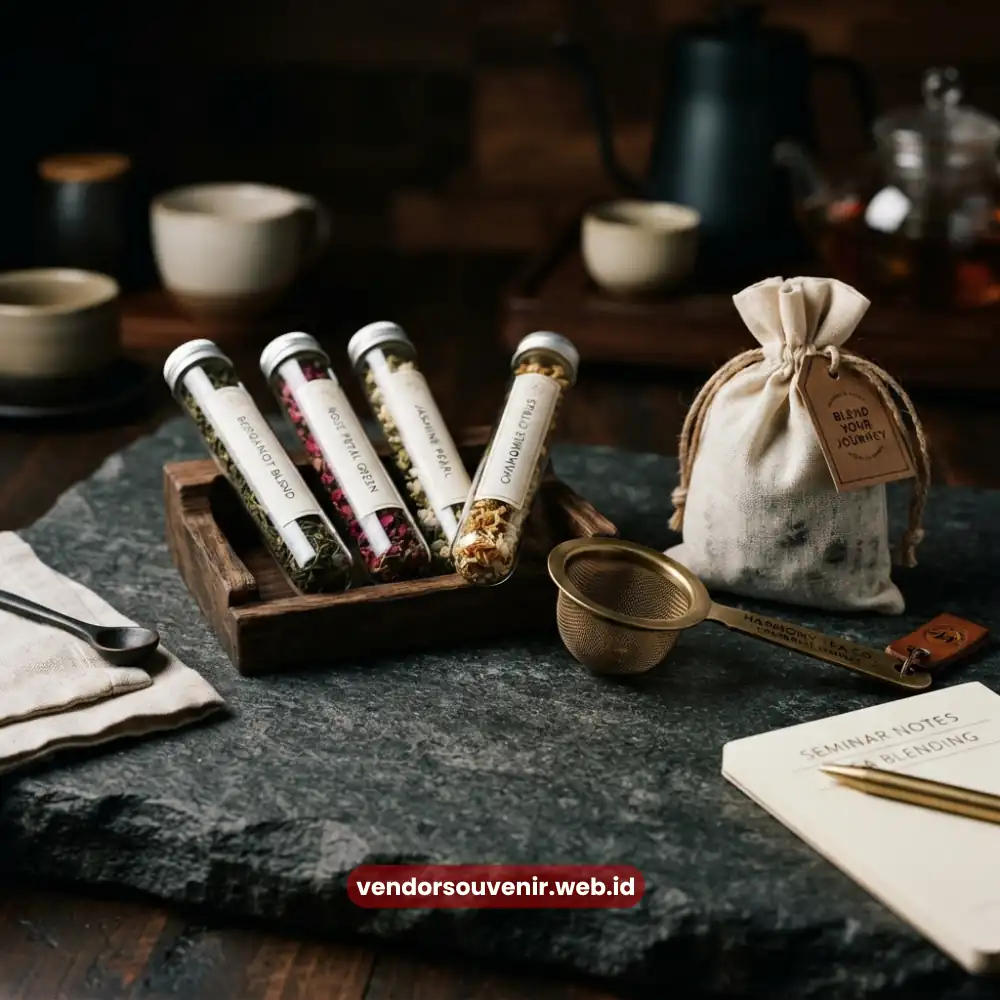

Daftar Isi
Souvenir seminar unik adalah cendera mata yang dirancang khusus dengan konsep, fungsi, atau kemasan yang berbeda dari suvenir seminar pada umumnya seperti pulpen atau notes polos.
Peserta seminar kini mengharapkan hadiah yang relevan dengan kebutuhan kerja sehari-hari, bukan sekadar pajangan yang berakhir di laci meja.
Bagi penyelenggara acara korporat maupun instansi, memilih souvenir yang tepat sama pentingnya dengan menyiapkan materi presentasi, karena benda ini menjadi jejak nyata dari sebuah acara setelah gedung pertemuan kembali sepi.
- Souvenir seminar unik memadukan fungsi praktis dengan desain yang mengangkat identitas brand penyelenggara.
- Pemilihan souvenir yang tepat terbukti meningkatkan daya ingat peserta terhadap acara dan penyelenggara.
- Ada beragam kategori souvenir unik, mulai dari perangkat kerja, produk ramah lingkungan, hingga hampers premium.
- Budget dan jumlah peserta menjadi dua faktor utama dalam menentukan jenis souvenir yang paling sesuai.
- Souvenir seminar unik dapat dipesan dengan sistem custom branding agar identitas acara Anda semakin melekat di benak peserta.
Mengapa Souvenir Seminar Tidak Boleh Asal Pilih
Sebuah studi internal dari beberapa penyelenggara acara korporat di Indonesia pada periode 2023-2024 menunjukkan bahwa souvenir yang fungsional dan berkualitas cenderung disimpan dan digunakan lebih dari enam bulan setelah acara berlangsung, dibandingkan souvenir generik yang rata-rata berakhir di tempat sampah dalam hitungan minggu.
Artinya, setiap rupiah yang dikeluarkan untuk souvenir seharusnya dipandang sebagai investasi jangka panjang untuk personal branding penyelenggara, bukan sekadar biaya pelengkap acara.
Souvenir yang terkesan murahan dapat menurunkan citra acara, sebaliknya souvenir yang dirancang matang mampu memperkuat kesan positif yang dibawa pulang peserta.
Apa Saja Ciri Souvenir Seminar yang Benar-Benar Unik
Souvenir dikatakan unik bukan karena mahal, melainkan karena relevan dengan kebutuhan peserta dan berbeda dari yang biasa mereka terima.
Ciri utamanya mencakup fungsi yang benar-benar terpakai dalam aktivitas kerja, desain yang mencerminkan tema atau identitas acara, kemasan yang rapi dan layak difoto, serta unsur personalisasi seperti nama peserta atau logo instansi.
Kombinasi keempat unsur ini membuat souvenir terasa spesial dan tidak mudah dilupakan.
Sebagai penyelenggara, penting untuk mempertimbangkan siapa audiens seminar tersebut.
Souvenir untuk seminar akademik tentu berbeda kebutuhannya dengan souvenir untuk pelatihan korporat atau workshop kreatif.
Menyesuaikan pilihan dengan profil peserta adalah langkah awal menciptakan souvenir yang benar-benar berkesan.
Ide Souvenir Seminar Unik Berdasarkan Kategori Fungsional
Perangkat Kerja Digital dan Analog
Powerbank custom, flashdisk dengan desain khusus, hingga stylus pen menjadi pilihan populer karena mendukung produktivitas peserta di era kerja digital.
Perangkat semacam ini memiliki usia pakai yang lama sehingga logo dan pesan acara tetap terlihat dalam waktu panjang.
Di sisi lain, produk analog seperti notebook custom dengan sampul kulit sintetis atau planner tahunan tetap diminati karena kesan profesional yang ditawarkannya.
Produk Self-Care dan Wellness
Tren kesehatan mental dan keseimbangan kerja mendorong munculnya souvenir bertema self-care, seperti aromaterapi mini, hand sanitizer dengan kemasan eksklusif, atau paket teh herbal.
Kategori ini cocok untuk seminar bertema kesehatan, pengembangan diri, maupun pelatihan manajemen stres di lingkungan kerja.

Produk Self-Care dan Wellness sebagai Souvenir Unik
Hampers dan Paket Kombinasi
Alih-alih memberikan satu jenis barang, banyak penyelenggara kini beralih ke hampers berisi beberapa item kecil yang saling melengkapi, misalnya kombinasi snack sehat, minuman kemasan, dan alat tulis dalam satu box custom.
Pendekatan ini memberi kesan mewah tanpa harus mengeluarkan biaya per item yang terlalu tinggi.
Produk Ramah Lingkungan
Tumbler stainless, tote bag kanvas, hingga alat tulis dari bahan daur ulang menjadi favorit karena selaras dengan isu keberlanjutan yang kini menjadi perhatian banyak instansi dan perusahaan.
Souvenir kategori ini juga membangun citra penyelenggara sebagai organisasi yang peduli lingkungan.
Bagaimana Menentukan Budget Souvenir Seminar yang Realistis
Menentukan anggaran souvenir sebaiknya dimulai dari jumlah peserta dan tujuan acara, bukan sekadar mengikuti tren.
Untuk seminar internal dengan skala kecil, souvenir fungsional bernilai menengah biasanya cukup memberikan kesan positif.
Sementara untuk acara berskala nasional atau seminar dengan sponsor eksternal, souvenir premium dengan kemasan eksklusif lebih relevan untuk menjaga citra acara di mata tamu undangan dan media.
Sebagai patokan umum, alokasi anggaran souvenir yang sehat biasanya berkisar pada persentase tertentu dari total biaya penyelenggaraan acara, dengan penyesuaian sesuai skala dan target citra yang ingin dibangun.
Konsultasi dengan penyedia souvenir berpengalaman dapat membantu menyusun kombinasi produk yang optimal sesuai anggaran yang tersedia.
Kesalahan Umum dalam Memilih Souvenir Seminar
Beberapa kesalahan yang sering terjadi antara lain memilih souvenir hanya berdasarkan harga termurah tanpa mempertimbangkan kualitas, mengabaikan relevansi produk dengan tema acara, serta terlambat memesan sehingga tidak sempat melakukan personalisasi seperti cetak logo atau nama peserta.
Kesalahan lain adalah tidak mempertimbangkan kepraktisan pengemasan dan distribusi souvenir saat acara berlangsung, terutama untuk seminar dengan jumlah peserta besar.
Cara Mendapatkan Souvenir Seminar Unik Sesuai Kebutuhan Acara Anda
Menentukan konsep souvenir yang tepat sebaiknya dilakukan jauh sebelum hari pelaksanaan, idealnya sejak tahap perencanaan acara.
Diskusikan tema, target peserta, dan anggaran bersama tim penyelenggara, lalu konsultasikan kebutuhan tersebut kepada penyedia souvenir yang berpengalaman menangani acara korporat maupun instansi pemerintahan.
Dengan begitu, proses produksi, personalisasi, hingga pengemasan dapat berjalan sesuai jadwal tanpa terburu-buru.

Souvenir seminar unik bukan sekadar pelengkap acara, melainkan representasi kualitas dan keseriusan penyelenggara di mata peserta.
Memilih souvenir yang fungsional, relevan dengan tema, dan dikemas secara profesional akan meninggalkan kesan yang bertahan lama, jauh melampaui durasi acara itu sendiri.
Butuh Bantuan Merancang Souvenir Seminar Unik?
Tim ahli kami siap membantu Anda menyusun paket seminar eksklusif yang menarik.
Pilihan barang akan disesuaikan dengan ketersediaan budget dan kebutuhan Anda.
Seluruh souvenir akan kami selaraskan dengan identitas visual perusahaan Anda.
Dapatkan penawaran harga terbaik untuk pesanan massal!
FAQ Seputar Souvenir Seminar Unik
Apa contoh souvenir seminar yang unik dan berkesan?
Contohnya adalah powerbank custom, hampers self-care, tumbler ramah lingkungan, dan notebook dengan desain personalisasi nama peserta yang menonjolkan fungsi sekaligus identitas acara.
Berapa kisaran budget ideal untuk souvenir seminar?
Budget bergantung pada skala acara dan jumlah peserta, namun umumnya disesuaikan dengan persentase tertentu dari total anggaran acara agar tetap proporsional.
Apakah souvenir seminar bisa dipersonalisasi dengan logo instansi?
Bisa. Sebagian besar produk souvenir seperti alat tulis, tumbler, dan hampers dapat dicetak dengan logo, nama acara, atau pesan khusus sesuai kebutuhan penyelenggara.
Apakah souvenir seminar ramah lingkungan lebih mahal?
Tidak selalu. Banyak produk ramah lingkungan yang tersedia dalam berbagai kisaran harga, tergantung bahan dan tingkat personalisasi yang dipilih.
Maroon Souvenir
Partner Corporate Gift terpercaya di Indonesia. Berpengalaman melayani ratusan perusahaan sejak 2018.
Lihat Portofolio Kami